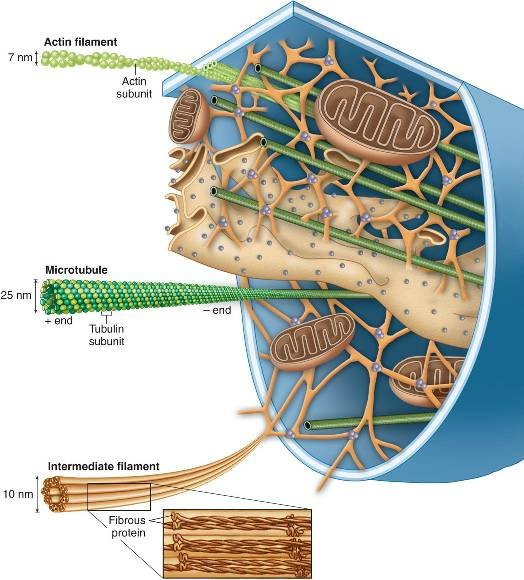

Prokariotske stanice sitnije su (1 do 10 μm) i jednostavnije od eukariotskih. One izgrađuju prokariotske organizme, koji su jednostanični (bakterije i cijanobakterije ili modrozelene alge, a prema suvremenoj sistematici arhebakterije i prave bakterije). Svi ostali organizmi, jednostanični (praživotinje, jednostanične alge i gljive) ili mnogostanični (alge, gljive, biljke, životinje), izgrađeni su od eukariotskih stanica. One su veće (10 do 100 μm, iznimno još i veće) i složenije od prokariotskih stanica te sadrže organele u kojima se zbivaju metabolički procesi.(metabolizam)
Prokarioti (Procarya, Procaryota; od starogrčkog pro = prije, ranije i karyon = orah, jezgra), ranije Monera, stanična su živa bića jednostavne građe koja imaju staničnu stijenku i membranu, ali nemaju staničnu jezgru (nemaju oblikovanu jezgrinu ovojnicu), ni organele, osim ribosoma. Razvili su se prije otprilike 2 milijarde i 100 milijuna godina. U sustavu dvije domene koji je proizašao iz djela Édouarda Chattona, prokarioti su svrstani u domenu Prokaryota. Ali u sustavu s tri domene, na temelju molekularne analize, prokarioti su podijeljeni u dvije domene: Bakterije (ranije Eubacteria) i Arheje (nekada Archaebacteria), dok su svi ostali, jednostanični ili višestanični organizmi, eukarioti. Takav tip stanice naziva se protocit. U citoplazmi prokariotskih stanica DNA je slobodno smješten kao jezgrin ekvivalent, nukleoid. U ovim stanicama je najčešće po samo jedan jedini kromosom koji ne sadrži histoproteine poput stanice eukariota. Kromosom bakterija najčešće se sastoji od samo jedne zatvorene molekule DNA. Samo neki prokarioti sadrže linearne kromosome. Veličina prokariota (a kod duguljastih promjer) je između 0,2 i 700 µm (Thiomargarita namibiensis oko 700 µm).

Sljedeća svojstva obilježavaju prokariote: nemaju stanične organele kao na primjer mitohondrij, nemaju plastide (osim rijetkih iznimaka) ali više od svega, nemaju staničnu jezgru. Genom, DNA kao i polimeraze su slobodni u citoplazmi. Transkripcija i translacija kod biosinteze proteina odvijaju se u citoplazmi; u usporedbi s eukariotima, imaju manje ribosome; kompleksno građena stanična ovojnica i dijelom postojanje druge stanične membrane; Peptidoglikan (spoj šećera i aminokiselina) nalazi se samo u staničnim stijenkama bakterija; jednostavni oblici; jednostavno, bespolno razmnožavanje, najčešće diobom; raznovrsni načini razmjene tvari; visoka fiziološka prilagodljivost; neki mogu živjeti u vrlo ekstremnim uvjetima (temperatura iznad 100°C, kiseli okoliš (pH 1-4), visoki hidrostatički pritisak (1000 bara)).
Bakterije, stanice gljiva, algi i biljaka s vanj. strane membrane imaju staničnu stijenku, koja im daje čvrstoću i oblik. Citoplazma prokariotskih stanica jedinstven je prostor, u kojem se nalazi kružna molekula DNA, nukleoid, i mnoštvo raspršenih ribosoma. U nekih bakterija stanična membrana čini nabor, mezosom, kojim se povećava površina membrane potrebne za metaboličke procese. Mezosom je također važan za razdvajanje udvostručenih kromosoma tijekom diobe bakterije binarnim cijepanjem.
Citoskelet čini mreža tankih bjelančevinastih niti i cjevčica koje se protežu kroz cijelu stanicu. On daje oblik stanicama, omogućuje gibanje stanica i citokinezu, gibanje staničnih dijelova, staničnu diobu, endocitozu, usidrenost staničnih organela i citoplazmatskih enzima na određenom mjestu čime se održava optimalan prostorni raspored u samoj stanici te rast same stanice. Citoskelet se sastoji od najmanje tri tipa struktura, a to su mikrotubuli, mikrofilamenti i intermedijarni filamenti.
Genetski materijal Genetski materijal nekog organizma su svi njegovi nasljedni podaci kodirani u DNA ili, kod nekih virusa, u RNA. RNA se koristi i u prijenosu informacije (mRNA), kao enzim (ribosomska RNA), u translaciji (tRNA) itd. Prokariotski genetski materijal nukleoida čini jednostavna kružna DNA (jedan kromosom), dok je u eukariota DNA linearna te u primjeru čovjeka imamo 23 para kromosoma linearne DNA. U mitohondrijima se nalazi mitohondrijska DNA.